2．高斯的微分几何
欧拉早就提出了曲面上任一点的坐标（x，y，z）可以用两个参数u和v表示的思想（第23章第7节）；就是说，曲面的方程可以这样给出：
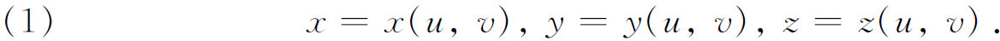
高斯的出发点是运用这个参数表示来做曲面的系统研究。从这些参数方程中我们有
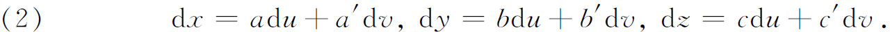
其中
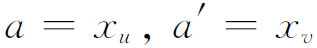
等。为了方便，高斯引进行列式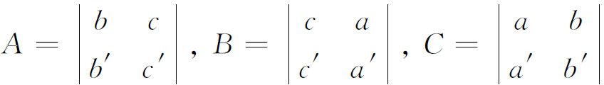
和量
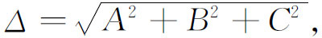
他假设这个量不恒等于零。
在任何曲面上基本量是弧长元素，这在（x，y，z）坐标中便是
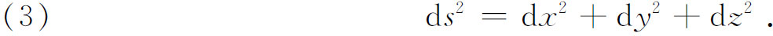
高斯用方程（2）把（3）写成
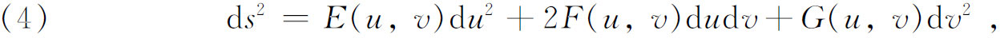
其中
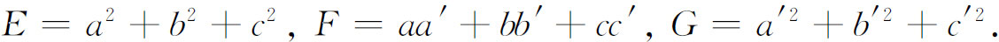
曲面上两条曲线之间的夹角是另一个基本量。曲面上的一条曲线由u和v之间的一个关系式确定，因为这样x，y和z就变成参数u或v的一个函数，而方程（1）则变成曲线的参数表示。用微分的语言来说，在一点（u，v），从这点出发的曲线或曲线的方向由比du∶dv给定。于是，如果我们有从（u，v）出发的两条曲线或两个方向，一个由du∶dv给定，另一个由du′∶dv′给定，并设θ是这两个方向之间的夹角，则高斯证明
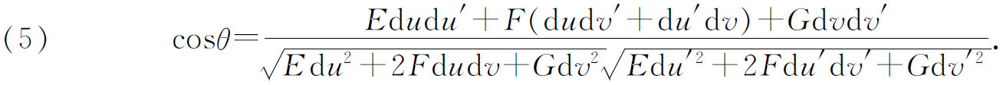
接着高斯着手研究曲面的曲率。他的曲率的定义，是欧拉用于空间曲线和罗德里格斯（Olinde Rodrigues）(2)用于曲面的标形对曲面的推广。在曲面上的每一点（x，y，z）有一个带方向的法线。高斯考虑一个单位球面，并选定一条半径，它具有曲面上的有向法线的方向。选取的半径确定了球面上的一个点（X，Y，Z）。然后，如果我们考虑曲面上围绕（x，y，z）的任一小区域，则在球面上有一个围绕（X，Y，Z）的对应区域。当这两块区域分别收缩到它们的对应点时，把球面上区域的面积与曲面上对应区域的面积之比的极限定义为曲面在点（x，y，z）的曲率。首先，注意到球面在点（X，Y，Z）处的切平面平行于曲面在点（x，y，z）处的切平面，高斯计算了这个比值。由于这种平行性，两个面积之比等于它们分别在各自切平面上的射影之比。为了求得这后一个比值，高斯进行了惊人数量的微分，并获得了一个更加基本的结果，这就是曲面的（总）曲率K为
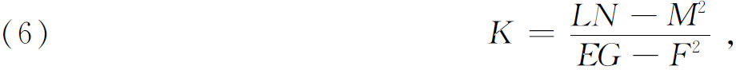
其中
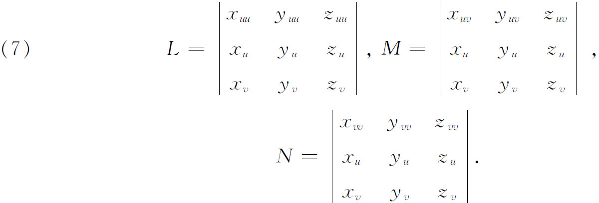
接着，高斯证明他的K就是欧拉早就提出过的在（x，y，z）处的两个主曲率之乘积。作为两个主曲率的平均曲率的概念，是由热尔曼（Sophie Germain）在1831年(3)提出的。
这时高斯作了一个极其重要的考察。当曲面由参数方程（1）给定时，曲面的性质似乎依赖于函数x，y，z。通过固定u，譬如说u＝3，并且让v变动，就在曲面上得到一条曲线。对于u的其他可能取定的值，得到一族曲线。同样地，固定v也得到一族曲线。这两族曲线是曲面上的参数曲线，使得曲面上的每一个点可以用一对数，譬如说是（c，d）给定，这里u＝c和v＝d是经过这点的参数曲线。这些坐标不一定比纬度和经度更表示距离。让我们想象一张曲面，在它上面已经以某种方式确定了参数曲线。于是高斯断定，曲面的几何性质仅仅由ds2的表达式（4）中的E，F和G确定。u和v的这些函数正是事情的全部。
从（4）和（5）显然可以看出，曲面上的距离和角度完全由E，F和G确定。但是，上面关于曲率的高斯的基本表达式（6），又依赖于另一些量L，M和N。这时高斯证明了
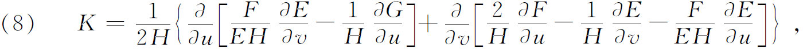
其中
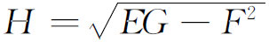
，并且等于高斯在上面定义的Δ。方程（8）叫做高斯特征方程，它表明曲率K，以及从（6）来看特别是量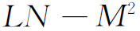
，仅仅依赖于E，F和G。因为E，F和G仅仅是曲面上参数坐标的函数，所以曲率也仅仅是参数的一个函数，而完全与曲面是否在三维空间中或曲面在三维空间中的形态无关。高斯已经注意到曲面的性质只依赖于E，F和G。但是除曲率以外的许多性质包含着量L，M和N，并且不是取方程（6）中的组合
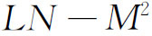
的形式。高斯的论点的解析证明由马伊纳尔迪（Gaspare Mainardi，1800—1879）(4)和科达齐（Delfino Codazzi，1824—1875）(5)独立地给出，他们两人都以微分方程的形式给出了两个附加关系，这些关系连同高斯的特征方程一起，可以用E，F和G来限定L，M和N，而K则取（6）中的值。其后，博内（Ossian Bonnet，1819—1892）在1867年(6)证明了一个定理：如果六个函数满足高斯特征方程和两个马伊纳尔迪-科达尔方程，则它们除了在空间的位置和定向以外唯一地确定一张曲面。具体地，如果给定了u和v的函数E，F，G和L，M，N，它们满足高斯特征方程和马伊纳尔迪-科达齐方程，并设
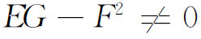
，则存在一张由u，v的三个函数x，y，z给定的曲面，其第一基本形式为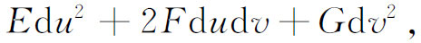
并且L，M，N和E，F，G有关系式（7）。这个曲面除它在空间的位置外是唯一确定的。［对于具有实坐标（u，v）的实曲面，必定有
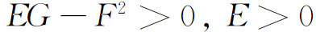
和G≥0。］博内的定理是和曲线的对应定理（第23章第6节）相类似的。曲面的性质仅仅依赖于E，F和G这一事实有许多含意，其中有一些已经由高斯在他的1827年的文章中揭示出来。例如，如果一张曲面无伸缩地弯曲，则坐标曲线u＝常数和v＝常数将保持不变，所以ds也将保持不变。因此曲面的所有性质，特别是曲率，也将保持不变。进一步说，如果两张曲面能够彼此建立一一对应，也就是说，如果
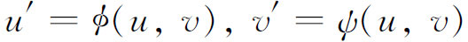
，其中u′和v′是第二张曲面上的点的坐标，并且如果两张曲面在对应点的距离元素相同，即如果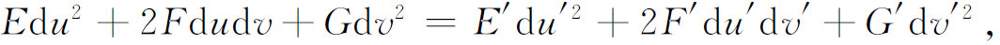
其中E，F，G是u和v的函数，E′，F′，G′是u′和v′的函数，则这两张曲面称为等距的，它们必然有相同的几何。特别正如高斯所指出的，它们在对应点一定有相同的总曲率。这个结果高斯叫做“极妙的定理”（theorema egregium），它是一个极其优美的定理。
作为一个推论，由此推出，要能把曲面的一部分移到另一部分上（那意味着保持距离），一个必要条件是曲面有常曲率。例如，球面的一部分可以无畸变地移到另一部分上，而在椭球面上就不能这样做。（但是，在等距映射下把一张曲面或曲面的一部分同另一张曲面或另一部分拟合，是可以发生弯曲的。）如果两张曲面不是常曲率的，虽然在对应点它们的曲率相等，但它们并不一定有等距关系。1839年(7)明金（Ferdinand Minding，1806—1885）证明：如果两张曲面确有相等的常曲率，则可以把一张曲面等距映射到另一张上面。
高斯在他1827年的文章中研究的另外一个极其重要的题目，是寻找曲面上的测地线。（测地线这一名词是刘维尔在1850年引进的，取自大地测量学。）这个问题需要高斯使用的变分法。他通过x，y，z表示来研究这个问题，并证明约翰·伯努利（John Bernoulli）提出的一个定理：测地线的主法线垂直于曲面。（例如球面上的纬度圆，在其一点处的主法线位于这个圆所在的平面上，并不与球面垂直，而经度圆在任一点处的主法线都与球面垂直。）u和v之间的任何一个关系都确定曲面上的一条曲线，给定测地线的这种关系由一个微分方程确定。这个方程可以写成多种形式，高斯仅仅指出这是u和v的一个二阶方程，但是没有明确给出。有一种形式是
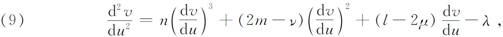
这里n，m，μ，ν，l，λ是E，F，G的函数。
在作曲面上两点之间有唯一测地线存在这一假定时，必须非常小心。球面上两个邻近的点有唯一的测地线连接它们，但是两个对径点却有无穷多条测地线连接它们。类似地，在圆柱面的同一条直母线上的两点，被一条沿直母线的测地线所连接，但是还有无穷多条作为测地线的螺旋线连接这两个点。如果在一区域内的两点之间只有一条测地线弧，则在这区域内这条弧给出两点之间的最短路线。在特殊曲面上实际确定测地线的问题，有许多人作过研究。
高斯在1827年的文章中，对于一个由测地线构成的三角形（图37.1），证明了一条关于曲率的著名定理。设K是一个曲面的可变曲率。于是
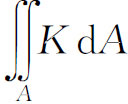
是这个曲率在面A积A上的积分。高斯的定理用于这三角形时说的是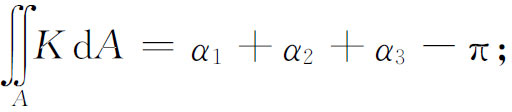
这就是说，在一个测地三角形上曲率的积分等于三个角之和超过180°之盈量，或在三角之和小于180°时，等于三个角之和不足180°之亏量。高斯说这个定理应该算是一个最精美的定理。这个结果推广了兰伯特（第36章第4节）的定理，后者断言球面三角形的面积等于它的球面盈量与半径平方之积，因为在一个球面三角形上K是常数且等于1/R2。
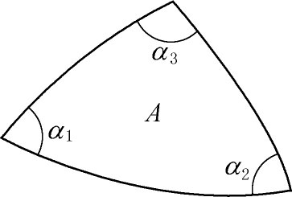
图37.1
在高斯的微分几何中还有一部分更为重要的工作必须提一提。拉格朗日（第23章第8节）曾经论述了旋转面到平面的保角映射。1822年，高斯以他关于求任一曲面保角变换到任何另一曲面上的解析条件问题的文章(8)，获得了丹麦皇家科学会的奖金。在两个曲面上对应点的邻域中成立的他的条件，相当于下列事实：设T和U是表示一个曲面的参数，t和u是表示另一个曲面的参数，则T和U的一个函数P＋iQ是p＋iq的一个函数f，这里p＋iq是参数t和u的对应的函数，并且
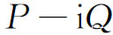
是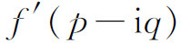
，其中f′或者就是f，或者是由f把其中的i换成－i所得到的函数。关于函数P＋iQ，我们将不作进一步的说明。这个函数f依赖于两个曲面之间的对应关系，这个对应关系是用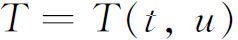
和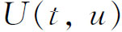
规定的。关于曲面的一个有限部分是否可能以及用什么方式保角映射到另一个曲面上的问题，高斯并没有回答。这个问题，黎曼在他关于复值函数的工作中继续做了研究（第27章第10节）。高斯在微分几何方面的工作本身就是一个里程碑。但是，它的含义比他自己的评价要深刻得多。在这个工作之前，曲面一直是被作为三维欧几里得空间中的图形进行研究的。但是高斯证明了曲面的几何可以集中在曲面本身上进行研究。如果通过曲面在三维空间中的参数表示
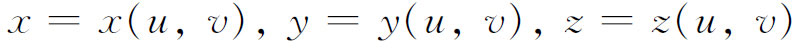
而引进u和v坐标，并用以确定E，F和G，就得到这个曲面的欧几里得性质。然而，在曲面上给定这些u和v坐标，以及以u和v的函数E，F和G表示的ds2的表达式之后，曲面的所有性质就都能从这个表达式推导出来。这就提出两个极其重要的思想。第一个是，曲面本身可以看成是一个空间，因为它的全部性质被ds2确定。人们可以忘掉曲面是位于一个三维空间中的这个事实。假如把曲面本身看成是一个空间，那么它具有哪一种几何呢？如果把测地线当成曲面上的“直线”，则几何是非欧几里得的。
这样，如果把球面本身当作一个空间来研究，那么它就有它自己的几何，并且即使取熟知的纬度和经度作为点的坐标，曲面的几何也不是欧几里得的，因为“直线”或测地线是曲面上的大圆弧。然而，如果把球面看成三维空间中的一张曲面，球面的几何就是欧几里得的。曲面上两点之间最短距离便是三维欧几里得几何的线段（虽然它并不在曲面上）。高斯的工作意味着，至少在曲面上有非欧几里得几何，如果把曲面本身看成一个空间的话。高斯是否看到他的曲面几何的这种非欧几里得的解释，那就不清楚了。
人们还可看得更远些。可以认为一张曲面所固有的E，F和G是由参数方程（1）确定的。但是，可以从曲面出发引进两族参数曲线，然后几乎任意地选取u和v的函数E，F和G。于是曲面有这些E，F和G所确定的几何。这个几何对于曲面是内蕴的，而与周围的空间没有关系。结果是，随着E，F和G的不同的选取，同一张曲面可以有不同的几何。
含义是更为深刻的。如果在同一张曲面上能够选取不同的E，F和G的组，从而确定不同的几何，那么为什么在我们的三维空间中不能选取不同的距离函数呢？当然，在直角坐标系中通常的距离函数是
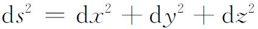
，如果从欧几里得几何出发，这是必然的，因为它恰好是勾股定理的解析表示。然而，对于空间的点给定相同的直角坐标，可以选取ds2的不同的表达式，从而得到该空间的完全不同的几何——一种非欧几里得几何。把高斯在研究曲面中首先获得的这种思想推广到任何空间，是由黎曼继承并发展的。